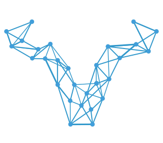
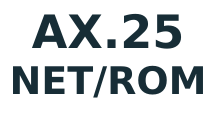
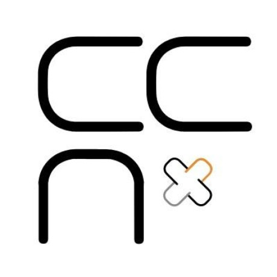

Protocol and stack comparison
PRP editorial comparison · Revision 7.96 · Updated 2026-10-31
62 criteria × 28 stacks; 56 Pending cells.
PRP website · Methodology and limits · Download structured data · Logo credits
Yes No Pending
Click a cell for evidence and qualifications. Expand a criterion for its definition. Results describe the selected stack and documented capabilities, not implementation certification. Pending means insufficient evidence, not unsupported.
C08 — archived previous definition (revision 4.72)
F25 — archived previous definition (revision 5.73)
F35 — archived previous definition (revision 5.73)
L02 — archived previous definition (revision 7.32)
F38 — archived previous definition (revision 7.33)
Communication recovery traffic — historical inventories
Evidence basis
Assumed · Reported · Documented · Demonstrated
Evidence basis, not protocol maturity or a quality ranking. No automatic verdict changes. A demonstration may support Yes or No; partial coverage must be disclosed. Authorship and independence are separate from the level.
| Criterion |  | | IP (IPv4/IPv6) |  |  |  |  | LISP | ILNPv6 | |||||||||||||||||||
|---|---|---|---|---|---|---|---|---|---|---|---|---|---|---|---|---|---|---|---|---|---|---|---|---|---|---|---|---|
F01 · Operates without IPv4/IPv6 throughout the stackDefinitionNo mandatory IP layer, including operational support. | Yes | No | No | No | No | Yes | No | No | No | No | No | No | No | Yes | No | Yes | No | Yes | Yes | Yes | No | No | No | No | No | No | No | Yes |
F02 · Needs no participant IP address configurationDefinitionParticipant-facing addressing uses a self-generated address or a non-IP participant namespace; no assigned participant IP address is needed at that layer. Underlay and relay transport IP configuration are excluded uniformly and remain assessed by F01/F03. This is not zero-configuration deployment: other identifiers, peers, trust and permissions may need provisioning. | Yes | Yes | No | Yes | Yes | Yes | Yes | Yes | Yes | Yes | Yes | No | No | Yes | Yes | Yes | Yes | Yes | Yes | Yes | No | No | Yes | Yes | No | Yes | No | Yes |
F03 · Routed operation needs no topology-dependent address configurationDefinitionNo network-prefix, subnet or locator assignment tied to attachment in the selected stack, including its underlay. DHCP/SLAAC automate such configuration rather than remove it. Locally generated identities and session-local forwarding labels do not count. Excludes route policy, trust, permissions and physical/link setup. | Yes | No | No | No | No | Yes | No | No | No | No | No | No | No | Yes | No | Yes | No | Yes | Yes | Yes | No | No | No | No | No | No | No | No |
F04 · Cryptographic reference independent of locationDefinitionParticipant or service reference verifiable independently of its locator; not necessarily self-certifying. | Yes | Yes | No | Yes | Yes | Yes | Yes | Yes | Yes | Yes | Yes | Yes | No | Yes | Yes | Yes | Yes | Yes | No | No | No | Yes | Yes | Yes | No | No | Yes | Yes |
F05 · Peer continuity and authorization across sessionsDefinitionA peer continuity and authorization context survives the end of a session and a change of carrier. No particular object name, data structure or protocol-specific lifecycle is required. A stable identity key alone does not establish retained authorization context. | Yes | Yes | No | Yes | Yes | Yes | No | Yes | No | No | No | Yes | No | No | No | Yes | No | No | No | No | No | Yes | Yes | No | No | No | Yes | Yes |
F06 · Encrypts content between communicating endpointsDefinitionProtection between the compared endpoints, not merely a transit link. | Yes | Yes | No | Yes | Yes | Yes | Yes | Yes | Yes | Yes | Yes | Yes | No | Yes | No | Yes | Yes | No | No | No | No | Yes | Yes | No | No | No | Yes | Yes |
F07 · Cryptographically authenticates a remote participantDefinitionRemote identity or signed authorship proof; does not imply civil identity, mutual authentication or current presence. | Yes | Yes | No | Yes | Yes | Yes | Yes | Yes | Yes | Yes | Yes | Yes | No | Yes | Yes | Yes | Yes | Yes | No | No | No | Yes | Yes | Yes | No | No | Yes | Yes |
F08 · Preserves a transport connection across path changesDefinitionThe same connection survives; reconnecting with the same contact does not qualify. UDP alone has no connection. | Yes | Yes | No | No | No | No | Yes | Yes | No | No | No | Yes | No | No | No | No | Yes | No | Yes | No | No | Yes | No | No | No | Yes | Yes | Yes |
F09 · Uses simultaneous paths for one communicationDefinitionConcurrent useful data paths, rather than sequential failover or probes. | Yes | Yes | Yes | Yes | Yes | Yes | No | Yes | Yes | No | No | Yes | Yes | No | Yes | Yes | Yes | Yes | No | Yes | No | No | No | Yes | Yes | Yes | Yes | Yes |
F10 · Proactively duplicates data across distinct pathsDefinitionIntentional redundancy before loss, rather than retransmission after loss. | Yes | Yes | No | Yes | Yes | Yes | No | No | No | No | No | Yes | No | No | Yes | Yes | No | No | No | Yes | No | No | No | Yes | No | No | Yes | Yes |
F11 · Retains messages for delivery after disconnectionDefinitionDeferred delivery storage, not transient transport buffers. | Yes | Yes | No | Yes | Yes | Yes | No | No | No | No | No | No | No | No | Yes | No | No | Yes | No | No | No | No | No | Yes | No | No | No | No |
F12 · Multicast replication at network forwardersDefinitionOne-to-many network forwarding; application-relay fanout does not qualify. BP selects static collective fanout with implementation qualification pending. | Yes | Yes | Yes | Yes | No | No | No | No | No | No | No | No | No | No | No | No | No | Yes | No | No | No | No | No | Yes | No | No | No | No |
F13 · Group with multiple authorized senders and continuity across sessionsDefinitionMultiple authorized participants can send to a group. Membership and group authority are distributed, and group continuity is independent of individual session lifetimes. Matching terminology or a particular implementation is not required. | Yes | Yes | No | No | No | No | No | No | No | No | No | No | No | No | No | No | No | No | No | No | No | No | No | No | No | No | No | No |
F14 · Explicit goal of concealing endpoint locationDefinitionLocation-hiding mechanism; not immunity to global correlation. | Yes | Yes | No | No | No | No | No | Yes | Yes | No | No | No | No | Yes | No | No | No | No | No | No | No | No | No | No | No | No | No | No |
F15 · Architectural protection of processing and state against unauthorized trafficDefinitionThe selected composition provides a documented admission or early-rejection mechanism together with bounded state or computational work at an identified protected boundary. Identify pre-admission CPU, memory, queue and state costs, the work deferred until admission, and the required local policy. Native configurable mechanisms may qualify within selected layers. Encryption, finite hardware or an anti-amplification byte cap alone does not qualify. Yes credits scoped architectural protection, not a measured service floor or protection from every admitted attacker. Link-capacity protection is assessed separately in F26. | Yes | Yes | No | Yes | Yes | No | Yes | Yes | Yes | No | Yes | Yes | Yes | Yes | Yes | Yes | Yes | No | No | No | No | Yes | Yes | No | Yes | Yes | Yes | No |
F16 · Controls final-peer access without external firewallDefinitionFinal-peer network payload admission: allow locally authorized cryptographic peers, deny others before application payload delivery, and revoke old authority at a completed local cutover, including active paths and pending delivery. Native policy hooks and administrative teardown/restart are allowed; authorized service must remain available after cutover. Already delivered data, application-operation permissions, handshake/probe traffic, unrelated host services and DoS isolation are outside scope. Added application authentication or payload filtering is not credited. | Yes | Yes | No | Yes | Yes | Yes | Yes | Yes | No | No | No | Yes | No | No | No | Yes | Yes | No | No | No | No | Yes | Yes | No | No | No | Yes | Yes |
F17 · Operates without DNSDefinitionNo DNS from bootstrap through authorized traffic; names absent from packets alone are insufficient. | Yes | Yes | Yes | Yes | Yes | Yes | Yes | Yes | Yes | Yes | Yes | Yes | Yes | Yes | No | Yes | Yes | Yes | Yes | Yes | Yes | Yes | Yes | Yes | Yes | No | No | Yes |
F18 · DTN forwarding across discontinuous contactsDefinitionNetwork intermediaries retain and later forward an admitted item across non-overlapping contacts, without a contemporaneous complete end-to-end path. A mailbox at a common server, transport buffering or reconnection alone does not qualify. Previously established trust and bounded expiry are allowed. | Yes | Yes | No | Yes | Yes | Yes | No | No | No | No | No | No | No | No | No | No | No | Yes | No | No | No | No | No | Yes | No | No | No | No |
F20 · Transit forwarding without per-end-to-end-flow stateDefinitionTransit can forward without a mandatory entry for each end-to-end flow or circuit. Routes, neighbor sessions and aggregate multicast state are allowed. Endpoint transport state is outside this transit-only test. Include selected overlay relays, not only the IP underlay. | Yes | Yes | Yes | Yes | Yes | Yes | Yes | No | No | Yes | Yes | Yes | Yes | No | Yes | Yes | No | Yes | Yes | Yes | Yes | Yes | Yes | Yes | Yes | Yes | Yes | Yes |
F21 · Identify the communicating peer without extra application authenticationDefinitionThe selected stack authenticates the final communicating peer and exposes that identity to the receiving application bound to the communication, without an added application authentication exchange. Neighbor identity, unauthenticated addresses or an unbound claim are insufficient. This does not supply civil identity, account roles, permissions or transit anonymity. | Yes | Yes | No | Yes | Yes | Yes | Yes | No | No | Yes | Yes | Yes | No | Yes | Yes | Yes | Yes | Yes | No | No | No | Yes | Yes | Yes | No | No | Yes | No |
F22 · Shared-reference discovery of independent participantsDefinitionOne shared reference can discover multiple independently identified participants, without an exclusive controller of that reference or a shared private identity. A bounded candidate set is sufficient; exhaustive enumeration and simultaneous delivery are not required. Only mechanisms in the declared stack count. Self-declaration does not establish membership legitimacy, service authorization or current availability. | Yes | Yes | No | No | No | No | No | No | No | No | No | No | No | Yes | Yes | Yes | No | No | No | No | No | No | No | No | No | No | No | Yes |
F23 · Endpoint mobility without infrastructure routing controlDefinitionSupports an endpoint changing attachment or access network while preserving its peer identity and ongoing logical communication, without requiring the application to establish a new peer relationship or reconstruct communication. The endpoint must not need administrative control of infrastructure routes, prefix origination or an AS; moving an administratively controlled network with the endpoint does not qualify. Normal participant attachment, path authentication and automatic protocol signaling are allowed, including signaling intrinsic to a mesh or overlay; merely running routing code does not disqualify a participant. Ordinary network access permission is not authority to originate infrastructure routes. Evaluate a supported endpoint role and state its limits; client-only support can qualify. Mere route repair with stationary endpoints, or retaining an identifier while restarting communication, is insufficient. Lossless handover, simultaneous mobility of both endpoints and indefinite disconnection are not required. Only mechanisms in the declared stack count. | Yes | Yes | No | Yes | Yes | Yes | Yes | Yes | Yes | Yes | Yes | Yes | No | No | No | Yes | Yes | Yes | Yes | Yes | No | Yes | Yes | Yes | No | Yes | Yes | Yes |
F24 · Reception coordinated with endpoint sleep periodsDefinitionAn endpoint may suspend transmission and reception during planned periods and wake at known opportunities to receive data. The sender or an intermediary responsible for delivery coordinates attempts with those opportunities, retaining data when necessary. The mechanism lets the receiver determine when to listen without remaining continuously active. Reconnecting on wake, receiver-initiated periodic polling, or retransmissions unaware of receiver availability do not suffice. Custody alone does not suffice without coordinated delivery. F27 separately evaluates negotiation of communication windows. | Yes | Yes | No | No | Yes | Yes | No | No | No | No | No | No | No | No | No | No | No | No | No | No | No | No | No | No | No | No | No | No |
F26 · Prevents unauthorized traffic from consuming downstream link capacityDefinitionThe selected composition provides a native transit admission or authorization check before transmission on an identified onward link. Traffic lacking the required local forwarding authority is rejected or constrained there, protecting subsequent links from that traffic. Identify the enforcement point, onward links protected, required policy and costs already incurred upstream. Local adjacency or forwarding authority may suffice; intermediaries need not know final endpoint identity. Endpoint-only filtering, encryption, receiver flow control and congestion control alone do not qualify. Yes does not imply protection of the ingress medium already traversed, RF-jamming resistance, guaranteed bandwidth or containment of every authorized attacker. Missing boundary evidence remains Pending; No applies only to the selected composition. | Yes | Yes | No | Yes | Yes | No | No | Yes | Yes | Yes | Yes | No | Yes | Yes | Yes | No | Yes | No | No | No | No | Yes | No | No | No | No | Yes | Yes |
F27 · Negotiated communication windowsDefinitionThe selected composition explicitly provides for participants to agree on temporal availability windows for transmission and periods of inactivity between them. The transmitter follows the agreed receiver availability rather than relying only on retries after disappearance. Identify the negotiating roles, protocol layer and carrier dependency. A scoped architectural requirement can qualify; unspecified procedures, timing parameters or wire formats must remain explicit qualifications. Local sleep timers, congestion windows, generic buffering and reconnection alone do not qualify. This does not by itself establish uninterrupted cryptographic-session retention or measured energy savings. | Yes | Yes | No | No | No | No | No | No | No | No | No | No | No | No | No | No | No | No | No | No | No | No | No | No | No | No | No | No |
F28 · Explicit endpoint path selectionDefinitionThe sending endpoint can select a forwarding path or constrain the intermediaries used for its communication, beyond choosing only the destination or local access interface. Identify the exposed granularity, such as nodes, domains or path segments, and how the selected path is enforced. Selection among paths offered by infrastructure may qualify; independent path discovery is not required. Automatic multipath scheduling without endpoint path control does not qualify. This does not establish knowledge of hidden underlay hops or freedom from all routing authorities. | Yes | Yes | Yes | No | No | No | No | Yes | Yes | No | No | No | Yes | No | Yes | No | No | Yes | No | No | No | No | No | No | No | Yes | Yes | No |
F29 · Named-content retrieval without prior server selectionDefinitionA requester can use a content reference to discover or reach a suitable supplier, replica or cache without selecting the serving endpoint beforehand. Direct named-data forwarding and reference-based supplier discovery can both qualify. The selected profile must bind the reference to the requested content; generic participant discovery alone is insufficient. Subsequent application transfer is allowed and must be disclosed. Host-name resolution alone does not qualify. Content authenticity and cross-requester caching are assessed separately. | Yes | Yes | No | No | No | No | No | No | No | No | No | No | No | No | Yes | No | No | Yes | No | No | No | No | No | Yes | No | No | No | No |
F30 · Verify content authenticity independently of its delivery connectionDefinitionThe selected composition supplies object-level cryptographic evidence that lets a recipient verify an object against an authorized origin or trusted reference after delivery through an intermediary or a different connection. Evidence must remain bound to the object rather than solely to the live transport. A signature, suitable MAC or digest bound to an independently trusted reference may qualify within its stated trust model. A bare checksum or a hash received only from the untrusted supplier does not establish authenticity. Public verification by arbitrary recipients is not required. | Yes | Yes | No | Yes | Yes | Yes | No | No | No | No | No | No | No | No | Yes | Yes | No | Yes | No | No | No | No | No | Yes | No | No | No | No |
F31 · Serve other requesters from an intermediate copyDefinitionAn intermediary in the selected composition can retain a reusable content object and satisfy a later request by another requester from that copy, avoiding a new transfer from the original source. Describe cache admission, lookup, serving and validity rules. Storage dedicated to forwarding one queued message to its original recipient, retransmission buffers and caching supplied only by an unselected application do not qualify. Persistence across restarts and guaranteed cache hits are not required. | Yes | Yes | No | No | No | No | No | No | No | No | No | No | No | No | Yes | No | No | Yes | No | No | No | No | No | Yes | No | No | No | No |
F32 · Route planning using future contacts and capacityDefinitionThe selected composition can compute or select a route using known or predicted future contact opportunities and their usable transfer capacities, so that forwarding decisions account for when a link will exist and whether it can carry the item. Externally supplied plans may qualify; participants need not negotiate the contacts. Merely waiting for connectivity, using current link costs, or accepting a local transmission timetable without route planning does not qualify. | Yes | Yes | No | No | Yes | Yes | No | No | No | No | No | No | No | No | No | No | No | No | No | No | No | No | No | No | No | No | No | No |
F33 · Reliable transfer adapted to prolonged delay and interruptionDefinitionThe selected composition provides retransmission-based reliable transfer with documented timer or recovery behavior adapted to prolonged propagation delays and interruptions of the transfer opportunity. Explicit suspension/resumption of recovery timers or another specified mechanism can qualify. Ordinary short-outage retries, arbitrary enlargement of a timeout, or storage without reliable-transfer recovery are insufficient. Identify the supported delay/interruption conditions and state retained; no unlimited outage tolerance is implied. | Yes | Yes | No | No | No | Yes | No | No | No | No | No | No | No | No | No | No | No | No | No | No | No | No | No | No | No | No | No | No |
F34 · Connect existing endpoints through a transparent bridgeDefinitionIntegration with existing networks: the selected composition bridges layer-2 frames across multiple forwarding hops while preserving the link service presented to attached endpoints without requiring changes to those endpoints. Identify the supported frame/link type; the existing evaluated service is Ethernet, including unicast, broadcast/multicast, forwarding or learning and MTU constraints. Using Ethernet as a carrier or routing IPv6 ULA packets does not itself provide this service. A hypothetical bridge adapter or unselected tunnel is insufficient. No unlimited broadcast-domain scale is required. | No | No | No | No | No | No | No | No | No | No | No | No | No | No | No | No | No | No | No | Yes | No | No | No | No | No | No | No | No |
F36 · Application-requested communication qualityDefinitionAn application can request communication properties such as capacity, delay or reliability, and the network uses those requirements in flow admission and resource allocation. Identify how requests map to offered service and how unsupported requests are handled. Packet priority marking alone does not qualify. No unconditional performance guarantee is implied. | Yes | Yes | No | No | Yes | Yes | No | No | No | No | No | No | Yes | No | No | No | Yes | No | No | No | No | No | No | No | No | No | No | Yes |
F37 · Congestion control targeted at the affected path segmentDefinitionThe selected composition can identify a congested intermediate link or bounded network region and adjust traffic at or toward that affected segment. Control may be local or coordinated by the endpoint responsible for the trajectory. Identify the congestion indication, its scope, the controlling participant and the traffic adjustment. A protocol-level capability to report localized saturation and renegotiate traffic at that segment may qualify architecturally. Generic end-to-end loss or delay without localization, static priority alone, and telemetry without an associated control capability do not suffice. No specific wire command, aggregate-flow controller, RINA layer, measured response time or lossless guarantee is required. | Yes | Yes | Yes | Yes | Yes | Yes | Yes | Yes | Yes | Yes | Yes | Yes | Yes | Yes | Yes | Yes | Yes | No | Yes | Yes | Yes | Yes | Yes | Yes | Yes | Yes | Yes | Yes |
F39 · Communicate with local or remote participants through the same interfaceDefinitionApplications communicate with processes on the same host or another host through the same communication abstraction and logical participant references. The stack selects local delivery or a network path without requiring the application to switch IPC APIs or encode the peer physical location. Local zero-copy is an optional optimization, not a requirement. This criterion concerns communication, not process migration or distributed execution. | Yes | Yes | No | Yes | Yes | Yes | Yes | No | Yes | Yes | Yes | No | No | Yes | Yes | Yes | Yes | Yes | Yes | No | No | No | Yes | Yes | Yes | Yes | Yes | Yes |
C01 · Same destination address reachable through an alternative pathDefinitionWhen a path becomes unavailable, the architecture permits reaching the same destination address over another available and authorized path, including through a different destination attachment. The sender need not substitute the address, obtain an alternative address from an external service, or rely on application redirection. Route discovery and fresh session establishment are allowed. A merely physical alternative counts only if the selected protocol can use it. Recovery of transit to an unchanged advertised prefix alone does not establish independence from the destination attachment. | Yes | Yes | Yes | Yes | Yes | Yes | Yes | Yes | Yes | Yes | Yes | No | Yes | Yes | Yes | Yes | Yes | Yes | Yes | Yes | Yes | Yes | Yes | Yes | Yes | Yes | Yes | Yes |
C02 · Conceals the final destination from the first intermediaryDefinitionA non-colluding intermediary sees its decrypted state and traffic. Excludes direct endpoint communication. | Yes | Yes | No | No | No | No | No | Yes | Yes | No | No | No | No | No | No | No | No | No | No | No | No | No | No | No | No | No | No | Yes |
C03 · Conceals protocol control fields in established trafficDefinitionPassive observation of established protected traffic, excluding bootstrap. Assess exposed control fields and protocol markers; timing/volume inference is separate. This is not a claim of complete protocol indistinguishability. | Yes | Yes | No | Yes | Yes | No | Yes | Yes | Yes | Yes | Yes | Yes | No | Yes | Yes | No | Yes | No | No | No | No | Yes | No | No | No | No | No | Yes |
C04 · Includes a defense against active-probe identificationDefinitionAn uncredentialed adversary probes an endpoint and observes replies and timing; no endpoint compromise. | Yes | Yes | No | No | No | No | No | No | Yes | No | Yes | No | No | Yes | No | No | No | No | No | No | No | No | No | No | No | No | Yes | No |
C05 · Bootstraps while external DNS is unavailableDefinitionInitial state as specified in the column, with no DNS cache. Does not cover blocking all peers or directories. | Yes | Yes | Yes | Yes | Yes | Yes | Yes | Yes | Yes | Yes | Yes | Yes | Yes | Yes | No | Yes | Yes | Yes | Yes | Yes | Yes | Yes | Yes | Yes | Yes | No | No | Yes |
C06 · Conceals the final-peer association in forwarding identifiersDefinitionA transit observer cannot identify the pair of final interlocutors solely from addresses and flow identifiers visible in established packets. Identifiers on an adjacency may reveal the participants of that segment, but must not directly reveal the final pair or provide a common end-to-end identifier linking that association across observed segments. Evaluate equivalents of the IP five-tuple, circuit labels and connection IDs. Payload encryption with the final pair exposed, or changing identities only between sessions, is insufficient. Timing/volume correlation is assessed separately in C07. | Yes | Yes | No | No | No | No | No | Yes | Yes | No | No | No | No | No | No | No | No | No | No | No | No | No | No | No | No | No | No | No |
C07 · Includes a defense against entry/exit correlationDefinitionIncludes a mechanism that reduces observable timing/volume information for cooperating observers. Optional padding or cover traffic can qualify; effectiveness and deployment defaults are separate, and complete correlation prevention is not required. | Yes | Yes | No | Yes | Yes | No | Yes | Yes | Yes | Yes | No | Yes | No | No | Yes | No | Yes | No | No | No | No | Yes | Yes | No | No | No | Yes | No |
S01 · Communication without a mandatory separate authorityDefinitionWilling peers can communicate from local information without a separate mandatory naming, routing, identity, governance or ledger authority. Network directory authorities and domain certification roles count; counterpart admission policies do not. Underlay allocation is assessed separately. | Yes | Yes | Yes | Yes | Yes | Yes | Yes | No | Yes | Yes | Yes | Yes | No | Yes | No | Yes | Yes | Yes | Yes | Yes | Yes | Yes | Yes | Yes | No | No | No | Yes |
S02 · Participant identity requires no external issuerDefinitionParticipants generate a usable cryptographic identity locally; counterparties decide whether to trust or authorize it. Does not imply civil identity. | Yes | Yes | No | Yes | Yes | Yes | Yes | Yes | Yes | Yes | Yes | Yes | No | Yes | Yes | Yes | Yes | Yes | No | No | No | Yes | Yes | Yes | No | No | Yes | Yes |
S03 · Selected stack needs no external address/name allocationDefinitionIndependent deployment needs no public address allocation, DNS delegation or externally assigned domain identifier. Private/local addressing may qualify; Internet reachability is a separate requirement. | Yes | Yes | Yes | Yes | Yes | No | Yes | No | Yes | Yes | Yes | Yes | No | Yes | No | Yes | Yes | Yes | Yes | Yes | Yes | Yes | Yes | Yes | Yes | Yes | No | Yes |
S04 · Independent operation under participant-controlled administrationDefinitionParticipants can deploy and maintain an operational domain with all mandatory control, trust and coordination components under their own administration, without authorization or an indispensable operational service from a specific external vendor or operator. Locally operated authorities are allowed, as is direct peer operation without such authorities. Choosing among external service providers alone does not qualify. This does not guarantee global reachability, freedom from external address allocation, seamless migration or immunity from a local administrator. | Yes | Yes | Yes | Yes | Yes | Yes | Yes | No | Yes | Yes | Yes | Yes | Yes | Yes | Yes | Yes | Yes | Yes | Yes | Yes | Yes | Yes | Yes | Yes | Yes | Yes | No | Yes |
G01 · Global reachability without complete global reachability tablesDefinitionThe complete selected stack permits global reachability without requiring a complete global reachability table at transit nodes or control services. Include prefix, identity and other identifier reachability, and required underlay routing. Moving that table upstream or into a directory does not qualify. Partitioned state is allowed; this is not zero state or a quantitative capacity guarantee. | Yes | No | No | No | Yes | Yes | No | No | No | Yes | No | No | No | Yes | No | Pending | No | Yes | No | No | Yes | Yes | No | No | No | No | No | Pending |
G02 · Scope-limited updates after participant attachment changesDefinitionA participant attachment change can be accommodated without disseminating its individual identity or location throughout the network. Updates remain within the affected region and participants maintaining relevant communication state, while reachability from elsewhere is preserved. Evaluate a destination that changes attachment, not only an initiating client reconnecting. An example where nothing relevant changes for external routing is insufficient. This evaluates update scope, separately from C01 address reachability and F23 logical communication continuity. | Yes | Yes | Yes | Yes | Yes | Yes | Yes | Yes | Yes | Yes | No | Yes | Yes | Yes | No | No | Yes | Yes | No | No | Yes | Yes | Yes | Yes | Yes | Yes | Yes | Yes |
G03 · Discovery and forwarding without a complete identity catalog at every nodeDefinitionA transit node can support discovery and forwarding without being required to maintain a complete catalog of final identities in the network. Neighbor records, local relationships, partial caches, aggregates and distributed queries are allowed. A mandatory global hosts.txt-equivalent at each node does not qualify. This consolidates the owner-clarified identity-catalog concern previously discussed as C08; the former C08 traffic-history-retention criterion is retired. G01 separately examines required complete global reachability state anywhere in the selected stack, including control services and underlay. | Yes | Yes | Yes | Yes | Yes | Yes | Yes | Yes | Yes | Yes | Yes | Yes | Yes | Yes | Yes | Yes | Yes | Yes | No | No | Yes | Yes | Yes | Yes | Yes | Yes | Yes | Yes |
G04 · Scale-out without a fixed-capacity coordination pointDefinitionAdded infrastructure can distribute routing/discovery work without an obligatory single fixed-capacity coordinator. Decentralization alone is insufficient. | Yes | Yes | Yes | Yes | Yes | Yes | Yes | No | Yes | Yes | Yes | Yes | Yes | Yes | Yes | Yes | Yes | Yes | Yes | Yes | Yes | Yes | Yes | Yes | Yes | Yes | No | Yes |
G05 · Plausibility of global operationDefinitionA credible architectural route to a connected network of at least 10 billion devices using contemporary equipment and realistic regional interconnection. Assess namespace, routing/discovery state placement, aggregation, control traffic, search work and update behavior in the selected complete stack. Distributed state and growing aggregate resources are allowed. Documentary mechanisms, resource models, proportional simulations and operational experience can support Yes; world-scale deployment or a full-scale simulation is not required. No requires an evidenced architectural or resource obstruction in the selected composition under the common setting; insufficient evidence remains Pending. Prior targets (1 s discovery, 1 h admission, 99.9% coverage, 5% of domestic 1 Gbit/s per direction, 64 GB per transit equipment and 1000 destinations/device/day) remain sizing references, not jointly certified pass/fail thresholds. Keep identities owned separate from destinations accessed. Use the same Internet-shaped regional infrastructure, population, access workload and contemporary equipment envelope for every composition. Protocol-specific routing, discovery, caching and placement policies may differ on that infrastructure. Do not substitute a more favorable physical topology, omit regions, silently add links or assume an independently chosen cache-hit rate. Count additional equipment and its placement explicitly under the same resource envelope. An evidenced inability to serve this common setting can justify No; impossibility in every imaginable topology is not required. Missing evidence remains Pending. | Yes | Yes | Yes | Pending | No | No | No | Pending | Pending | Pending | Pending | Yes | Yes | Yes | Pending | No | Pending | Pending | No | No | Pending | Pending | Yes | Pending | No | Yes | Pending | Pending |
| Independent evidence and adoption | ||||||||||||||||||||||||||||
E01 · Public interoperability between independent implementationsDefinitionAt least two independently developed implementations exchanged traffic for the selected profile in a publicly documented test. Shared standardization work does not negate implementation independence; two wrappers around the same core do not qualify. Credit only tested functions. | No | No | Yes | Yes | Yes | Yes | Yes | Yes | Yes | Pending | Pending | Yes | Pending | Pending | Yes | Pending | Pending | Yes | Yes | Pending | Yes | Yes | Pending | Pending | Yes | Pending | Yes | Pending |
E02 · Published independent security analysisDefinitionA third party has published a security audit or formal analysis of security-critical mechanisms of the selected profile. Identify analysis type, scope, assumptions, version and conflicts of interest. Paid independent review can qualify; publication does not imply a clean result or complete security. | No | No | Yes | Yes | Yes | Yes | Yes | Yes | Yes | Yes | Pending | Yes | Pending | No | Yes | Pending | Pending | Yes | Yes | Yes | Yes | Yes | Yes | Yes | Yes | Yes | Yes | Pending |
E03 · Public open-source implementation of the selected profileDefinitionAt least one publicly obtainable implementation covers the selected profile with its necessary implementation components available under OSI-approved licenses. Official reference status is not required. Public specifications or partial demonstration code alone do not qualify. | No | No | Yes | Pending | Pending | Pending | Yes | No | Yes | Yes | Yes | Pending | Yes | Yes | Yes | Yes | Yes | Yes | Yes | Yes | Yes | Pending | Pending | Pending | Yes | Pending | No | Yes |
E04 · Published independent quantitative measurementsDefinitionAn independent party has published at least one quantitative measurement of an implementation of the protocol, describing the scenario, method and results. The measured configuration must be identifiable and relevant to the functionality assessed. Explicitly state differences from the selected profile and the measured mechanism. Exact versions of every executable, raw data, scripts and reproduction instructions strengthen evidence but are not mandatory. Another implementation or configuration is admissible when it preserves the relevant measured mechanism. Promotional numbers without a method, exclusively theoretical results and measurements only by the evaluated implementation developers do not qualify. A Yes establishes the existence of bounded external measurements, not their favorable outcome or validation of all capabilities. | No | No | Yes | Yes | Yes | Yes | Yes | Yes | Yes | Yes | Yes | Yes | Yes | Yes | Yes | Yes | Yes | Yes | Yes | Yes | Yes | Yes | Yes | Yes | Yes | Yes | Yes | Yes |
E05 · Real-world use by independent operatorsDefinitionPublic, attributable evidence that a person, community or organization independent of the protocol authors uses the protocol to meet a real need, beyond tests or demonstrations. Personal and community use count. There is no minimum duration or requirement to reproduce every option of the selected column. Record the actual deployment scope, version, transport and duration where known. This measures adoption, not validation of all technical properties in the column. | No | No | Yes | Yes | Pending | Pending | Yes | Yes | Yes | Yes | Yes | Yes | Yes | Yes | Yes | Yes | Pending | Yes | Yes | Yes | Yes | Yes | Yes | Pending | Yes | Pending | Yes | Pending |
| Deployment requirements | ||||||||||||||||||||||||||||
D01 · Unprivileged routine endpoint operationDefinitionA supported ordinary endpoint can perform the selected communication on an identified general-purpose OS without root/admin or equivalent elevated networking capabilities during routine operation. Disclose any privileged installation, provisioning or helper; those are not silently counted as unprivileged runtime. | Yes | Yes | Yes | Yes | Yes | Pending | Yes | Yes | Yes | Yes | Yes | Yes | Yes | Yes | Yes | Yes | Yes | No | No | Yes | Yes | Pending | Pending | Yes | Yes | Yes | No | No |
D02 · Operation without an additional kernel moduleDefinitionA supported endpoint operates on an identified general-purpose OS without installing an additional kernel module or rebuilding its kernel. Stock networking modules and drivers are allowed; disclose required OS features and configuration. | Yes | Yes | Yes | Yes | Yes | Yes | Yes | Yes | Yes | Yes | Yes | Yes | Yes | Yes | Yes | Yes | Yes | Yes | Yes | Yes | Yes | Yes | Yes | Yes | Yes | No | Yes | No |
D03 · Operation without specialized hardwareDefinitionA supported endpoint can execute the selected profile on commodity computing/network hardware, without a mandatory specialized radio, accelerator or secure element. Ordinary NICs are allowed; identify carrier constraints and do not replace the selected stack. | Yes | Yes | Yes | Yes | Yes | No | Yes | Yes | Yes | Yes | Yes | Yes | Yes | Yes | Yes | No | Yes | Yes | Yes | Yes | Yes | No | Yes | Yes | Yes | Yes | Yes | Yes |
D04 · Create additional communication identities without network administrationDefinitionOver an already authorized and provisioned transport, an ordinary user can create and use additional independently controlled communication identities without network-administration privileges or modifying shared interface addresses, prefixes or routes. Identity creation must not require per-identity host-network reconfiguration or administrator provisioning. Peer acceptance and transport-access permissions remain separate. This does not promise unlimited resources, anonymity, or isolation from all resource contention. | Yes | Yes | No | Yes | Yes | Yes | Yes | Yes | Yes | No | No | Yes | No | Yes | Yes | Yes | Yes | Yes | No | No | No | Yes | Pending | Yes | No | Yes | No | No |
| Key establishment and recovery | ||||||||||||||||||||||||||||
K01 · Post-quantum end-to-end key establishmentDefinitionThe selected end-to-end key-establishment construction provides documented post-quantum confidentiality against recorded-traffic decryption, using a suitable post-quantum KEM or justified hybrid construction. Identify algorithms, combiner, negotiation and downgrade conditions. This alone does not establish post-quantum authentication against active attackers. | Yes | Yes | No | No | No | No | Yes | No | Yes | No | No | Yes | No | No | No | No | No | No | No | No | No | No | No | No | No | No | No | No |
| Specification licensing and patent commitments | ||||||||||||||||||||||||||||
L01 · Unrestricted use and implementation of the specificationDefinitionThe publicly available specification permits use and implementation for any purpose, including commercial use, without field-of-use restrictions or individual permission. Attribution and redistribution obligations must be disclosed. Modification does not imply compatibility, conformance or endorsement. This does not require permission to republish altered normative prose as an official standard, and does not assess patent rights (L02) or implementation-code licensing (E03). Cover the required layers of the selected profile. | Yes | Yes | Yes | Yes | Pending | Pending | Yes | Pending | Yes | Yes | Yes | Yes | Yes | Yes | Yes | Yes | Yes | Yes | Pending | Yes | Yes | Pending | Yes | Yes | Yes | Pending | Yes | Pending |